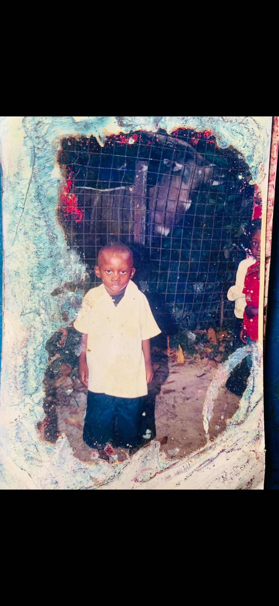
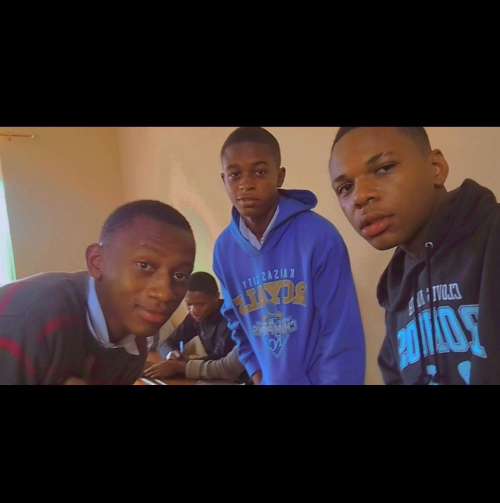

travailleur aguerit
Serviable même dans la pression
Constamment dans la recherche de la connaissance
Une bonne écoute des avis des autres


Web Master
Geni Logiciel
Conception Mobile
Data base
Gestionnaire d'outils de collecte de données pour EPSP
Developpeur frontend chez ARYO Sarl
Tresorier principal à l'ASAD
Un éventail complet de compétences techniques que je maîtrise pour créer des solutions digitales innovantes et performantes.
ephraime